sestatus 查看运行状态
如果是运行状态，编辑 cat /etc/selinux/config
修改该属性 SELINUX=disabled然后重启即可。
上面是永久生效的方法，还有一种是立即生效 运行getenforce 0(我没有运行成功)
3 相关配置文件说明
ganglia 配置文件目录：/etc/ganglia
rrd 数据库存放目录：/var/lib/ganglia/rrds
httpd 主站点目录：/var/www/html
ganglia-web 安装目录：/usr/share/ganglia
ganglia-web 配置目录：/etc/httpd/conf.d/ganglia.conf
由于我的机器是Centos6.5的,所以我这里只介绍yum安装方式，apt-get安装和这差不多，只是命令不一样而已。
rpm -qa |grep ganglia
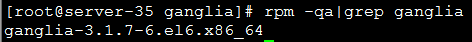我这里已经有了，是3.1.7版本的
如果没有，请运行下面代码更新资源
Fedoraproject.org/pub/epel/6/x86_64/epel-release-6-8.noarch.rpm 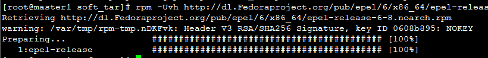
在每个需要监控的节点，安装gmond
yum install ganglia-gmond
配置/etc/ganglia/gmond.conf文件
vim /etc/ganglia/gmond.conf
Global区域的修改如下图，只需要修改user以及send_metadata_interval
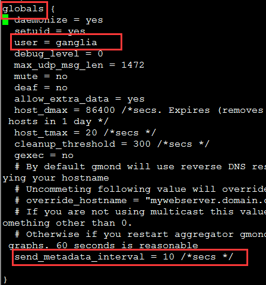Cluster区域修改如下图，修改name名称，这个是集群名称，用于后面gmetad的配置
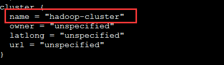Udp_send_channel区域修改如下，注释掉mcasy_jion(用于组播)，我们这里采用单播，10.3.1.35替换成你机器的名称
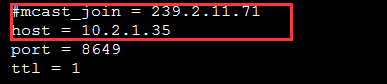
Udp_recv_channe修改如下，注释掉mcast_join以及bind即可
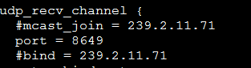启动gmond
service gmond start
注：
可以在启动之前，运行telnet localhost 8649
如果出现如下图，xml内容则安装正确，接着往下安装
也可以将gmond.conf中的debug从0改为100，看更多的日志，然后进行排查。
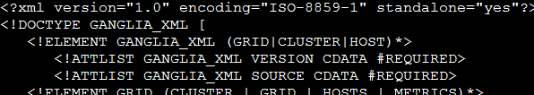
安装 yum install ganglia-gmetad
配置
vim /etc/ganglia/gmetad.conf
找到data_source，第一个参数hadoop-cluster和gmond.conf的cluster的name必须一样，第二个参数和 upd_send_channel中的host 一样，当然可以有很多个，我这里配置了一个，结合你配置的环境。
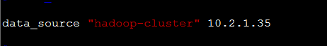启动
service gmetad start
测试 telnet localhost 8651 出现和上面测试gmond的情况一样，那么安装成功。
安装yum install ganglia-web
修改ganglia-web 的访问权限（只是掉其他，加入Allow from all）
vim /etc/httpd/conf.d/ganglia.conf
1)安装 apache以及php
yum install httpd php
2)安装ganglia-web
yum install ganglia-web
3)将ganglia-web 安装目录链接到httpd 主站点目录（apache服务器访问的根目录）
ln -s /usr/share/ganglia /var/www/html
4)修改httpd 主站点目录下ganglia 站点目录的访问权限
将ganglia 站点目录访问权限改为apache:apache，否则会报错
$ chown -R apache:apache /var/www/html/ganglia
$ chmod -R 755 /var/www/html/ganglia
5)修改rrd 数据库存放目录访问权限
将rrd 数据库存放目录访问权限改为nobody:nobody，否则会报错
chown -R nobody:nobody /var/lib/ganglia/rrds
依次启动gmond,gmetad,httpd
service gmond start
访问hostname/ganglia即可(这里的hostname是安装gweb以及gmetad的主机名或者ip)
下载expat-2.0.1.tar.gz
对于64位操作系统，需要手动的拷贝下动态链接库到lib64下
同样64位机器需要拷贝动态链接库
然后运行
/usr/local/rrdtool/bin/rrdtool
可以看到
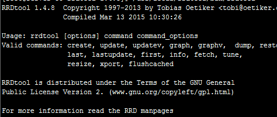1）现在才是安装ganglia的开始，如果提示需要pcre的话
yum install pcre
2）下载ganglia-3.2.6，解压，安装
如果出现下图所示，则正确
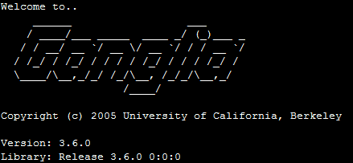如果没有，请查看下面出错情况：
出现的问题:
Checking for confuse
checking for cfg_parse in -lconfuse... no
Trying harder including gettext
checking for cfg_parse in -lconfuse... no
Trying harder including iconv
checking for cfg_parse in -lconfuse... No
解决: yum install libconfuse-devel
checking pcre/pcre.h usability... no
checking pcre/pcre.h presence... no
checking for pcre/pcre.h... no
checking pcre.h usability... no
checking pcre.h presence... no
checking for pcre.h... no
checking for pcre_compile in -lpcre... no
解决:yum install pcre*
解决好上述问题运行下面命令：
make
make install
拷贝gmond服务启动脚本
cp /opt/soft_tar/ganglia-3.6.0/gmond/gmond.init /etc/rc.d/init.d/gmond
创建配置文件主目录
mkdir /etc/ganglia
拷贝gmond命令道/usr/sbin目录下
cp -f /usr/local/ganglia/sbin/gmond /usr/sbin/gmond
生成gmond服务配置文件
etc/ganglia/gmond.conf
加入gmond 服务
chkconfig --add gmond
配置 /etc/ganglia/gmond.conf
红色部分发生改动
globals {
daemonize = yes
setuid = yes
user = ganglia //运行ganglia用户
debug_level = 0
max_udp_msg_len = 1472
mute = no
deaf = no
allow_extra_data = yes
host_dmax = 86400 /*secs. Expires (removes from web interface) hosts in 1 day */
host_tmax = 20 /*secs */
cleanup_threshold = 300 /*secs */
gexec = no
send_metadata_interval = 15 /*多少秒发送一次 */
}
cluster {
name = "mycluster"//集群名称，要与gmetad.conf名称一致
owner = "unspecified"//集群用户名称
latlong = "unspecified"
url = "unspecified"
}
host {
location = "unspecified"
}
udp_send_channel {
#mcast_join = 239.2.11.71//注释掉用单播
host = 10.2.1.35//gmetad的机器
port = 8649
ttl = 1
}
udp_recv_channel {
#mcast_join = 239.2.11.71
port = 8649
#bind = 239.2.11.71
retry_bind = true
}
启动gmond
运行 service gmond start 启动gmond
出现'/usr/local/ganglia/etc/gmond.conf' not found
解决
ln -s /etc/ganglia/gmond.conf /usr/local/ganglia/etc/gmond.conf
或者gmond --default_config > /etc/ganglia/gmond.conf
重新启动gmond：service gmond restart.
测试数据
在gmetad机器上运行 tcpdump -i eth0 udp port 8649，或者telnet localhost 8649
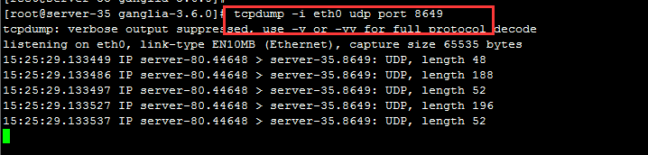
PHP程序需要依赖Apache来运行，因此需要安装如下依赖
1)安装
yum -y install php httpd
2)启动
service httpd start //启动httpd 服务
3)测试php
vi /var/www/html/index.php
输入：
<?php
phpinfo();
?>
保存，然后浏览器 master/index.php
下载，解压
http://jaist.dl.sourceforge.net/project/ganglia/ganglia-web/3.6.2/ganglia-web-3.6.2.tar.gz
解压
cd ganglia-web-3.6.2
vim Makefile源文件
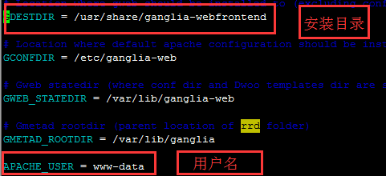修改如下
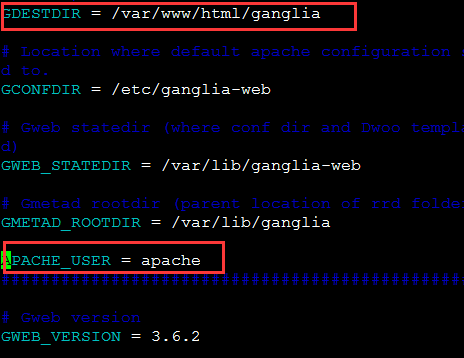执行make install
最后在/var/www/html/ganglia文件夹下，
cp conf_default.php conf.php
vim conf.php，修改
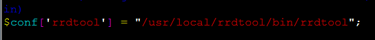这里修改为本地安装的rrdtool的bin路径
chown -R nobody:nobody /var/lib/ganglia/rrds
chmod -R 755 /var/lib/ganglia/rrds
在${HADOOP_HOME}/etc/hadoop/hadoop-metrics2.properties中 把原来的全部注释掉，加上下面的，重启启动即可
*.sink.ganglia.class=org.apache.hadoop.metrics2.sink.ganglia.GangliaSink31 *.sink.ganglia.period=10 *.sink.ganglia.slope=jvm.metrics.gcCount=zero,jvm.metrics.memHeapUsedM=both *.sink.ganglia.dmax=jvm.metrics.threadsBlocked=70,jvm.metrics.memHeapUsedM=40 namenode.sink.ganglia.servers=server-35:8649 resourcemanager.sink.ganglia.servers=server-35:8649 datanode.sink.ganglia.servers=server-35:8649 nodemanager.sink.ganglia.servers=server-35:8649 maptask.sink.ganglia.servers=server-35:8649 reducetask.sink.ganglia.servers=server-35:8649
在${HADOOP_HOME}/etc/hadoop/hadoop-metrics2-hbase.properties中 把原来的全部注释掉，加上下面的，重启启动即可
.sink.ganglia.class=org.apache.hadoop.metrics2.sink.ganglia.GangliaSink31 *.sink.ganglia.period=10 hbase.sink.ganglia.period=10 hbase.sink.ganglia.servers=server-35:8649